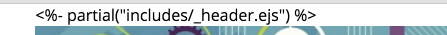

Rebuild the IoT web site using templating. This version of the site will aim to significantly reduce the content the author has to manage by reusing 'templates' containing common sections.
Download this archive:
... and expand it to suitable location on your hard drive. It will be structured like this:
iot-web-ejs
├── harp.json
└── public
├── assets
│ └── images
│ ├── automotive.png
│ ├── banner.jpg
│ ├── ctrg.png
│ │ ....
│ ├── tssg.png
│ └── wit-crest.png
├── index.html
├── strands
│ ├── data.html
│ ├── devices.html
│ ├── maths.html
│ ├── networks.html
│ ├── programming.html
│ └── project.html
└── style.css(Not all the image files shown)
Open the folder in Sublime - and make sure you reveal the folder structure as shown above.
We would now like to 'serve' the web site - using the tools we installed in the last lab. This will involve running a command prompt in the same folder as the directory containing the project, and entering the harp server command:
If you have the node archive expanded onto your G: drive (as described in the last lab) then this pattern should work:
Run the Command Prompt and then enter:
C:\My Documents> G:
G:\> node\init
G:\> cd iot-web-ejs
G:\iot-web-ejs> harp server
Your server is listening at http://localhost:9000/
Press Ctl+C to stop the serverVisit this page in your browser:
and it should render as expected.
Also, open index.html in your browser by locating the file on disk - as you will be used to doing in the labs so far.
The site will render more or less exactly the same using both techniques. Verify this now - and note carefully the slight differences in the URL in the address bar in both cases.
Create a new folder in your project called includes and create the following files:
<header id="header">
<h2>
<img class="header-crest-img" src="assets/images/wit-crest.png" alt="WIT Crest">
Department of Computing & Mathematics
</h2>
<h3> BSc (Hons) the Internet of Things </h3>
<hr>
</header><footer id="footer">
<hr>
<p class="footer-social-links">
<a href="http://www.facebook.com/witcomp"> facebook </a>
<a href="http://twitter.com/ComputingAtWIT"> twitter </a>
<a href="https://ie.linkedin.com/pub/computing-at-wit/a9/221/1b6"> linkedin </a>
</p>
</footer>Notice that these are fragments, not complete pages - and are more or less the same for all pages in our site. Also notice that these particular file names are prefixed with '_' (underscore).
Now rename the file index.html to call it index.ejs.
The project folder should now be structured as follows:
iot-web-ejs
├── harp.json
└── public
├── assets
│ ...
├── includes
│ ├── _header.ejs
│ └── _footer.ejs
├── index.ejs
├── strands
│ ├── data.html
│ ├── devices.html
│ ├── maths.html
│ ├── networks.html
│ ├── programming.html
│ └── project.html
└── style.cssFiles with the extension ejs we call templates - they contain HTML markup as before but also additional notations we will explore shortly.
We can now make one very significant change to index.ejs - we can completely remove the <header> and <footer> elements - replacing them with the following partial statements:
...
<%- partial("includes/_header.ejs") %>
...
<%- partial("includes/_footer.ejs") %>
...Assuming you are still serving the page, visit it now:
There should be no change in how the page is rendered. Our index page is now generated by its own content + the partials including at the head and foot of the pages.
You may also wish to try to open the page directly from the folder/file. Try this now as well. You may need to drag/drop index.ejs to an open browser, as the file type is not longer recognized.
You will notice that it does not render correctly - the partial statements appear to not be processed correctly:

From now on, we can only view the pages via the 'harp server' command - and the pages will be in fragments that this program assembles for us.
Locate the file strands/data.html and rename it to strands/data.ejs
Open this page in sublime - and delete the <header> and <footer> elements - replacing them with the partials we already include in index.ejs:
...
<%- partial("../includes/_header.ejs") %>
...
<%- partial("../includes/_footer.ejs") %>
...Notice the '..' prefixes the path because the data page is in a subdirectory.
Assuming you are still serving the site, visit it now:
... and verify that the Data Science pages renders correctly.
You may notice that it almost works - the WIT Crest seems to appear ok in the index page, but in Data Science it seems to be missing.
We can fix this now - open _header.ejs and change the path to the crest:
<img class="header-crest-img" src="/assets/images/wit-crest.png" alt="WIT Crest">(we have just placed a / in front of the assets path name)
Check now that the crest appears correctly.
We can now proceed to rename all of the strand pages from .html to .ejs.
Your project should be structured like this now:
├── harp.json
└── public
├── assets
│ └── images
│ │ ....
├── includes
│ ├── _footer.ejs
│ └── _header.ejs
├── index.ejs
├── strands
│ ├── data.ejs
│ ├── devices.ejs
│ ├── maths.ejs
│ ├── networks.ejs
│ ├── programming.ejs
│ └── project.ejs
└── style.cssOnce this is completed, then delete the <header> and <footer> pages throughout replacing them with the partials as in the previous two steps.
For instance, this will be the devices page:
<!DOCTYPE html>
<html lang="en">
<head>
<meta charset="UTF-8">
<link rel="stylesheet" type="text/css" href="http://fonts.googleapis.com/css?family=Open+Sans" />
<link type="text/css" rel="stylesheet" href="../style.css" media="screen"/>
<title> Devices </title>
</head>
<body>
<%- partial("../includes/_header.ejs") %>
<article>
<h1> Devices </h1>
<p>
<img class="strand-right-img" src="../assets/images/iot/devices/devices-1.png">
The IoT professional must be comfortable when dealing with the many kinds of devices and sysems that are the means for the Internet to interact with the environment. Such competence must be built on an awareness of the various means with which devices and systems perform, how they can be made to perform well and how their perfromance attributes may be changed
</p>
</article>
<figure>
<img class="strand-timeline-img" src="../assets/images/iot/timeline.png">
<img class="strand-modules-treble-img" src="../assets/images/iot/devices/devices-modules.png">
</figure>
<article>
<h2> Devices Learning Path </h2>
<p>
<img class="strand-left-img" src="../assets/images/iot/devices/devices-2.png">
As a student on this programme, you will start to build this competence with the single board computer, the single board micro-controllers and fundamental analogue electronics, which when combined together will afford the environmental input-output capability with basic access to the network. The single board micro-controllers combined with the fundamental analogue topics will give ready access to the analogue and low-level digital world, whose key parameters of interest can be sensed and if necessary conditioned for conversion into digital form, as well as offering an effective actuation interface for analogue change. Protocol-defined communications covering all aspects from framing commands and information to the hierarchy of reliable communications, will open up the ability to convey information and commands over various media types and allow the candidates a complete education in more complex microcontroller based internet access points.
</p>
</article>
<%- partial("../includes/_footer.ejs") %>
</body>
</html>This is an archive of the project at this stage:
In the includes folder, create these new files:
<article class="banner">
<div id="summary">
<p>
BACHELOR OF SCIENCE (HONOURS)
</p>
<h3>
APPLIED COMPUTING IN THE INTERNET OF THINGS
</h3>
<h3>
Program your World!
</h3>
<p>
An exciting new level 8 Honours Degree for 2015. Combine Programming and Electronics and learn how to code cool devices, places and things. Be part of the next wave of innovation in Computing
</p>
</div>
</article><article id="curriculum">
<hr>
<section id="col1">
<h2><a href="strands/programming.html"> Programming </a></h2>
<p>
Learn a broad range of programming and problem solving skills, including exciting new platforms, software tools and languages. Use these skills to build apps for mobile, cloud and device based IoT applications. Evolve a porfolio of facinating aplications.
</p>
<h2><a href="strands/data.html"> Data Science </a></h2>
<p>
At the heart of many IoT applications is data: measurements, events alarms and other information that must be relayed, stored and ultimately turned into knowledge. Learn the fundamentals of modern approaches to data in this strand.
</p>
<h2><a href="strands/devices.html"> Devices </a></h2>
<p>
The 'Things' we connect to are often physical devices. These can range from simple temperature sensors to sophisticated control systems like traffic lights or cameras. Connecting to and interacting with the physical world is the subject of this strand.
</p>
</section>
<section id="col2">
<h2><a href="strands/networks.html"> Networks </a></h2>
<p>
This strand will explore modern networks and cloud technology. Be able to configure, network and manage all categories of computer systems from simple controlers to single board board computers, mobiles and full workstations.
</p>
<h2><a href="strands/project.html"> Project </a></h2>
<p>
Building exciting IoT projects in every semester of the programme. Your projects will combine skills acquired from the other strands and enable you to build a comprehensive an compelling portfolio of IoT applications and services.
</p>
<h2><a href="strands/maths.html"> Mathematics </a></h2>
<p>
Introduce foundation concepts for many of the more applied concepts in the other Strands. Learn mathematical techniques in a modern context and apply core principles in new an interesting ways.
</p>
</section>
</article><section id="sponsors">
<hr>
<h4> Supported by leading edge research at... </h4>
<p>
<img class="footer-img" src="assets/images/tssg.png" alt="TSSG">
<img class="footer-img" src="assets/images/ctrg.png" alt="CTRG">
<img class="footer-img" src="assets/images/automotive.png" alt="ATG">
</p>
</section>These are all partials extracted from the index.ejs page. This can now be drastically simplified:
<!DOCTYPE html>
<html lang="en">
<head>
<meta charset="UTF-8">
<link rel="stylesheet" type="text/css" href="http://fonts.googleapis.com/css?family=Open+Sans" />
<link type="text/css" rel="stylesheet" href="style.css" media="screen"/>
<title>BSc in the Internet of Things</title>
</head>
<body>
<%- partial("includes/_header.ejs") %>
<%- partial("includes/_summary.ejs") %>
<%- partial("includes/_curriculum.ejs") %>
<%- partial("includes/_sponsors.ejs") %>
<%- partial("includes/_footer.ejs") %>
</body>
</html>The project is now structured like this:
├── harp.json
└── public
├── assets
│ └── images
│ │ ....
├── includes
│ ├── _curriculum.ejs
│ ├── _footer.ejs
│ ├── _header.ejs
│ ├── _sponsors.ejs
│ └── _summary.ejs
├── index.ejs
├── strands
│ ├── data.ejs
│ ├── devices.ejs
│ ├── maths.ejs
│ ├── networks.ejs
│ ├── programming.ejs
│ └── project.ejs
└── style.cssThis is an archive of the project at this stage:
This final step is a little more ambitious - involving the use of a layout. This is a reusable structure for an entire page, and can simplify and centralize the simplify the management and organisation of large sites. We will apply a layout to just the strand pages.
First, create a new file in the strands folder:
<!DOCTYPE html>
<html lang="en">
<head>
<meta charset="UTF-8">
<link rel="stylesheet" type="text/css" href="http://fonts.googleapis.com/css?family=Open+Sans" />
<link type="text/css" rel="stylesheet" href="../style.css" media="screen"/>
<title> IoT Strands </title>
</head>
<body>
<%- partial("../includes/_header.ejs") %>
<%- yield %>
<%- partial("../includes/_footer.ejs") %>
</body>
</html>This is a master layout for all strand pages. It contains a standard <head> section, and in the <body> we include the header and footer templates. However, notice that between these includes is the following statement:
<%- yield %>This is a special directive, which will be replaced with the contents of any other pages in this folder.
Now, turning our attention to the strand pages themselves - we can remove completed the head and include sections of all the pages. This is a new version of programming.ejs for instance:
<article>
<h1> Programming </h1>
<p>
<img class="strand-right-img" src="../assets/images/iot/programming/programming-1.png">
The IoT requires a new breed of software skills, with an emphasis on flexible, reactive, and highly networked applications and services. This software runs on a diverse range of systems, is frequently connected to cloudservices, and may be capable of leveraging large data sets to deliver inferences and decision support in an informedmanner. The software is designed and implemented using agile techniques, with an emphasis on test driven developmentand quality user experiences..
</p>
</article>
<figure>
<img class="strand-timeline-img" src="../assets/images/iot/timeline.png">
<img class="strand-modules-double-img" src="../assets/images/iot/programming/programming-modules.png">
</figure>
<article>
<h2> Programming Learning Path </h2>
<p>
The Data Science strand will begin with the fundamentals of relational databases used to store structured transactional business data. This data holds the basisfor reporting and descriptive analysis required to predict future events and to identify relationships in data. In the third year the students will extend their knowledge to NoSQL (especially for managing unstructured data) databases and data warehouses (supporting consistent views of a domain, and as a springboard for statistics and machine learning analyses). In the IoT context the importance of dealing with large volumes of data in terms of storage and analytics is great. The skills they learn will allow them to design and implement the appropriate data solution with a complete understanding and knowledge of the available options. The students will learn about the trade-offs in terms of consistency, availability and partitioning. In the fourth year students will learn and implement the skills of data mining covering classification, prediction and clustering, applied to data that had been managed using methods and technologies they have learned about in previous years.
</p>
</article>All we have done is delete content from the top and tail of the page - everything else is left exactly as it was.
Do this now for all strand pages (but NOT for index.ejs) - and once completed, verify that the pages is 'served' correctly.
Your project will eventually be structured like this:
iot-web-ejs
├── harp.json
└── public
├── assets
│ └── images
│ ...
├── includes
│ ├── _curriculum.ejs
│ ├── _footer.ejs
│ ├── _header.ejs
│ ├── _sponsors.ejs
│ └── _summary.ejs
├── index.ejs
├── strands
│ ├── _layout.ejs
│ ├── data.ejs
│ ├── devices.ejs
│ ├── maths.ejs
│ ├── networks.ejs
│ ├── programming.ejs
│ └── project.ejs
└── style.cssThis is an archive of the project at this stage:
Try deploying the web site using the surge command covered in the last lab.
Try the following command:
harp compileWhen you run this command a completely new folder will be generated called www inside your project. The overall project will look like this:
.
├── harp.json
├── public
│ ├── assets
│ │ ...
│ ├── includes
│ │ ├── _curriculum.ejs
│ │ ├── _footer.ejs
│ │ ├── _header.ejs
│ │ ├── _sponsors.ejs
│ │ └── _summary.ejs
│ ├── index.ejs
│ ├── strands
│ │ ├── _layout.ejs
│ │ ├── data.ejs
│ │ ├── devices.ejs
│ │ ├── maths.ejs
│ │ ├── networks.ejs
│ │ ├── programming.ejs
│ │ └── project.ejs
│ └── style.css
└── www
├── assets
│ └── images
│ ...
├── index.html
├── strands
│ ├── data.html
│ ├── devices.html
│ ├── maths.html
│ ├── networks.html
│ ├── programming.html
│ └── project.html
└── style.cssNotice that the www folder doest no longer has the includes folder and its contents - and all of the files are back to being .html instead of .ejs. This is the 'compiled' version of the web site - and is ready for deployment. The surge command will have deployed this version to the web server automatically.